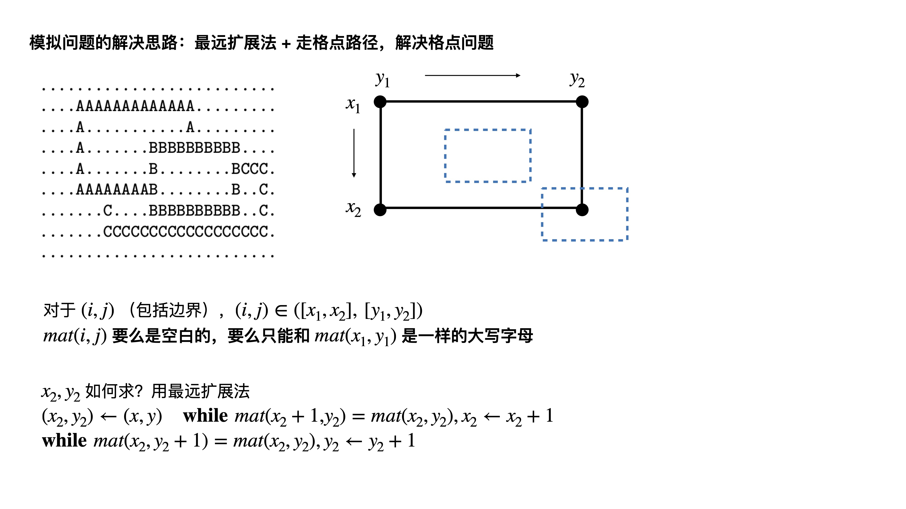

这部分内容讲了基础算法中的区间问题，贪心问题， 扫描法和数学相关的分析
区间覆盖问题 Grass
1 2 3 4 5 6 7 8 9 10 11 12 13 14 15 16 17 18 19 20 21 22 23 24 25 26 27 28 29 30 31 32 33 34 35 36 37 38 39 40 41 42 43 44 45 46 47 48 49 50 51 52 53 54 55 56 57 58 59 60 61 const int maxn = 1e4 + 10; int n, m = 0; double L, W; class A { public: double l, r; A() = default; A(double l, double r) : l(l), r(r) {} bool operator< (const A &rhs) const { return l < rhs.l || (l == rhs.l && r < rhs.r); } } a[maxn]; void init m = 0; } void solve sort(a+1, a+1+m); double to = 0.0; int i = 1; int cnt = 0; bool ok = true ; while (to < L) { cnt++; double lst = to; for (; i <= m && a[i].l <= lst; i++) chmax(to, a[i].r); if (lst == to && to < L) { ok = false ; break ; } } if (!ok) printf ("-1\n" ); else printf ("%d\n" , cnt); } int main freopen("input.txt" , "r" , stdin); while (~scanf("%d%lf%lf" , &n, &L, &W)) { init(); _rep(i, 1, n) { double x, r; scanf("%lf%lf" , &x, &r); if (r < W/2.0) continue ; double dx = sqrt(r*r - W*W/4.0); a[++m] = A(x-dx, x+dx); } // then solve solve(); } }
活动执行问题，优先队列 UVA1422
1 2 3 4 5 6 7 8 9 10 11 12 13 14 15 16 17 18 19 20 21 22 23 24 25 26 27 28 29 30 31 32 33 34 35 36 37 38 39 40 41 42 43 44 45 46 47 48 49 50 51 52 53 54 55 56 57 58 59 60 61 62 63 64 65 66 67 68 69 70 71 72 73 74 75 76 77 78 79 80 81 const int Max = 10000000; const int maxn = 20000; int n; class A { public: int l, r, w; A() = default; A(int l, int r, int w) : l(l), r(r), w(w) {} bool operator< (const A &rhs) const { return r > rhs.r; } } a[maxn]; inline bool cmp(const A &a, const A &b) { return a.l < b.l; } bool check(int speed) { priority_queue<A> que; int i = 1; _rep(p, 1, maxn) { while (i <= n && a[i].l == p) que.push(a[i++]); if (que.empty()) { if (i > n) break ; else continue ; } int tot = speed; while (que.size() && tot > 0) { A t = que.top(); que.pop(); if (t.r <= p && t.w > 0) return false ; if (tot >= t.w) { tot -= t.w; t.w = 0; } else { t.w -= tot; tot = 0; que.push(t); } } } return que.empty(); } void solve sort(a+1, a+1+n, cmp); int L = 0, R = Max; while (L < R) { int mid = (L + R) >> 1; if (check(mid)) R = mid; else L = mid + 1; } printf ("%d\n" , L); } void init // } int main freopen("input.txt" , "r" , stdin); int kase; cin >> kase; while (kase--) { init(); scanf("%d" , &n); _rep(i, 1, n) scanf("%d%d%d" , &a[i].l, &a[i].r, &a[i].w); // solve solve(); } }
约束关系的双集合思想 UVA1450
1 2 3 4 5 6 7 8 9 10 11 12 13 14 15 16 17 18 19 20 21 22 23 24 25 26 27 28 29 30 31 32 33 34 35 36 37 38 39 40 41 42 43 44 45 46 47 48 49 50 const int maxn = 1e4 + 10; int n; int a[maxn], b[maxn]; bool check(int val) { int sum1 = 0, sum2 = 0; int can1 = 0, can2 = 0, cantot = 0; for (int i = 1; i <= n; i++) { sum1 += a[i], sum2 += b[i]; int del1 = max(0, sum1 - val); int del2 = max(0, sum2 - val); if (del1 > can1 || del2 > can2 || del1 + del2 > cantot) return false ; if (sum1 - can1 > 0) can1++; if (sum2 - can2 > 0) can2++; if (sum1 + sum2 > cantot) cantot++; } return true ; } void solve int L = 0, R = 100000; while (L < R) { int mid = (L + R) >> 1; if (check(mid)) R = mid; else L = mid + 1; } printf ("%d\n" , max(0, L - 1)); } void init // } int main freopen("input.txt" , "r" , stdin); int kase; cin >> kase; while (kase--) { init(); scanf("%d" , &n); _rep(i, 1, n) scanf("%d%d" , &a[i], &b[i]); // then solve solve(); } }
田忌赛马中的贪心选择 将田忌和齐王的马分别从速度快到慢排序 消耗齐王的快马 消耗自己的慢马
特别注意
a [ l 1 ] = b [ l 2 ] a[l_1]=b[l_2] a [ l 1 ] = b [ l 2 ] ( a [ l 1 ] , b [ l 2 ] ) (a[l_1], b[l_2]) ( a [ l 1 ] , b [ l 2 ] ) 用田忌最慢的马把齐王最快的马给消耗掉 − 200 -200 − 2 0 0 200 200 2 0 0 最快的马 和没了 最快的马 的齐王比 显然，贪心选择，后者更好没了最慢的马的田忌集合 ⩾ \geqslant ⩾ 没了最快的马的齐王集合
视图还原 有一类问题是给你正视图和侧视图，问最多有几个立方体
不妨假设高度为h h h x x x y y y ( x , y ) (x,y) ( x , y )
由此我们需要枚举for ∀ h ∈ [ 1 , max ] \textbf{for} \ \forall h \in [1, \max] for ∀ h ∈ [ 1 , max ] h h h 高度为h h h a [ h ] a[h] a [ h ] 侧视图中对应的长条个数b [ h ] b[h] b [ h ] max ( a [ h ] , b [ h ] ) \max(a[h], b[h]) max ( a [ h ] , b [ h ] ) h × max ( a [ h ] , b [ h ] ) h \times \max(a[h], b[h]) h × max ( a [ h ] , b [ h ] )
相邻交换法 一类目标优化问题，可以考虑这样的式子b [ i + 1 ] + b [ i ] = G 1 ( ⋯ ) b[i+1]+b[i] = G_1(\cdots) b [ i + 1 ] + b [ i ] = G 1 ( ⋯ ) i ↔ i + 1 i \leftrightarrow i+1 i ↔ i + 1 b [ i ] + b [ i + 1 ] = G 2 ( ⋯ ) b[i]+b[i+1] = G_2(\cdots) b [ i ] + b [ i + 1 ] = G 2 ( ⋯ )
要想i i i i + 1 i+1 i + 1 c o m p a r e compare c o m p a r e G 2 ( ⋯ ) < G 1 ( ⋯ ) G_2(\cdots) < G_1(\cdots) G 2 ( ⋯ ) < G 1 ( ⋯ )
格点相关的模拟类问题 POJ3923
1 2 3 4 5 6 7 8 9 10 11 12 13 14 15 16 17 18 19 20 21 22 23 24 25 26 27 28 29 30 31 32 33 34 35 36 37 38 39 40 41 42 43 44 45 46 47 48 49 50 const int maxn = 100 + 10; char mat[maxn][maxn]; int n, m; vector<char> ans; bool check(int x, int y, int x2, int y2) { _rep(i, x, x2) _rep(j, y, y2) { if (isupper(mat[i][j]) && mat[i][j] != mat[x][y]) return false ; } return true ; } void solve _for(x, 0, n) _for(y, 0, m) { if (!isupper(mat[x][y])) continue ; char ch = mat[x][y]; //debug(ch); int x2 = x, y2 = y; while (mat[x2+1][y] == ch) x2++; while (mat[x][y2+1] == ch) y2++; if (x2 - x < 2 || y2 - y < 2) continue ; if (check(x, y, x2, y2)) ans.push_back(ch); } sort(ans.begin(), ans.end()); for (auto x : ans) printf ("%c" , x); printf ("\n" ); } void init memset(mat, 0, sizeof(mat)); ans.clear(); } int main freopen("input.txt" , "r" , stdin); while (scanf("%d%d" , &n, &m) == 2 && n) { init(); // then get data _for(i, 0, n) scanf("%s" , mat[i]); // then solve solve(); } }
 微信
微信 支付宝
支付宝